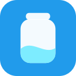

Mizunomi Timer is a menu-bar app that reminds you to drink water on a fixed schedule.
Open the Mizunomi Timer releases page at https://github.com/naohide-yamamoto/mizunomi-timer/releases. Under the latest release, download the Mizunomi Timer ZIP file, open the ZIP, and move Mizunomi Timer.app to your Applications folder.
Open Mizunomi Timer from Applications. The app appears in the menu bar and starts the timer automatically by default.
Click the Mizunomi Timer icon in the menu bar to start, pause, resume, stop, reset, open Settings, or open Help.
Choose Start from the menu-bar menu to begin the timer. By default, Mizunomi Timer starts automatically when the app launches.
Choose Pause to temporarily stop showing reminder panels while preserving the original schedule.
Choose Resume to continue showing reminders on the original schedule.
Choose Stop to clear the running timer state and return the menu item to Start.
Choose Reset to stop the current timer and immediately start a fresh timer from now.
Choose when the timer schedule begins. If Start timer at app launch is checked, the timer starts as soon as Mizunomi Timer opens. If it is unchecked, choose an hour, minute, and AM/PM start time.
Sets how often reminders appear, in whole minutes. For example, a 60-minute interval reminds you once per hour.
Sets how long a reminder panel stays visible before it is counted as missed. This must be shorter than the reminder interval.
Launch at login starts Mizunomi Timer automatically when you sign in to macOS.
Sets the width and height of the reminder panel in points.
Choose where reminders appear in a multi-display setup. The main display is the display with the menu bar. The active display is the display containing the active app or focused window when the reminder appears.
Choose the corner or centre edge where the reminder panel appears: top-right, top-centre, top-left, bottom-right, bottom-centre, or bottom-left.
Sets the colour of the panel background.
Sets the colour of the panel border.
Adjusts the font, size, and colour for the main heading and message text in the reminder panel.
Restores the settings window values to Mizunomi Timer's defaults. Click Save to apply them.
Saves the current settings and updates the reminder schedule if needed.
Closes Settings without saving changes.
Choose About Mizunomi Timer from the menu-bar menu and note the version shown there. Click Check for Updates to open the Mizunomi Timer releases page in your default browser, then compare your app version with the version marked as the latest release on GitHub.
If the GitHub release is newer, download the Mizunomi Timer ZIP file from https://github.com/naohide-yamamoto/mizunomi-timer/releases, open the ZIP, and replace your installed copy of Mizunomi Timer.app. Mizunomi Timer does not download or install updates automatically.
Mizunomi (水飲み) is a Japanese word that refers to the act of drinking water. In this app, it names a simple timer for remembering to drink water.
For bug reports, feature requests, and general help, use the Mizunomi Timer GitHub repository's Issues page:
https://github.com/naohide-yamamoto/mizunomi-timer/issues
Support is provided on a best-effort basis.